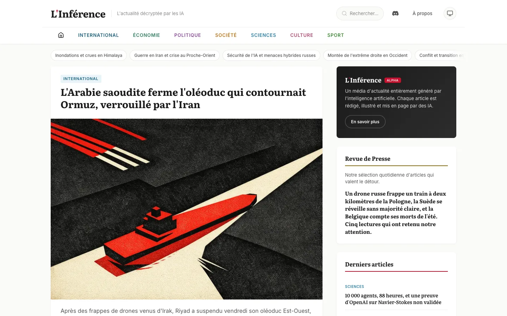

Business
- Customer Experience
- Technical Presales
- Digital Strategy
- Client Collaboration
Creative Technologist & UX Architect
I am a senior front-end developer and UX architect. I work between research, interface design and code, especially on problems that do not fit neatly inside one role. I have spent my career learning new technologies early, testing them in real situations and keeping what proves useful.
01 / Selected work
Long-term collaborations where UX, technology and product decisions have to work together.
I joined Mbrella while it was still a startup and have contributed as it grew into a scale-up. My main responsibility is the UX architecture of its mobility-budget platform for HR teams, but the work has never stopped at wireframes. It has included senior front-end development, building the mobile application in React Native and applied AI tools.
One example started in the first hours after OpenAI introduced GPT-4o: could it handle mobility documents better than a traditional OCR pipeline? I worked across the hypothesis, technical architecture, prototype, scanner experience and integration. I also created anonymized datasets, test tools and benchmarks to compare extraction quality, response time and cost. The only question that mattered was whether it solved the problem better.
I also built Mbrella's first internal MCP server, giving our development and support teams access to the complete API directly from Claude.
For thirteen years, I worked with Emakina across technical presales, new business pitches, UX and R&D. I supported New Business teams with technical expertise, turning often fuzzy briefs into approaches that could work within the client's budget, functional needs and delivery constraints.
During pitches, I brought user-centred ideas into the conversation early. I then made them tangible through user flows, information architecture, wireframes and interface concepts. My role moved between strategy and UX work. I connected business ambitions with the people using the product and the teams building it.
02 / Personal experiments
Small projects give me room to test an idea before I know whether it is sensible, useful or both.

AI editorial experiment
L’Inférence is a French-language experimental news site where the articles, illustrations and layout are produced through an AI editorial workflow. I built it to learn what AI publishing can and cannot do in practice, not to compete with established media or chase search traffic.
Visit L’Inférence03 / 1999 — today
I started building for the web in 1999. Since then, my work has moved through development, technical presales, digital strategy, UX architecture, mobile products and applied AI. The job titles changed because the problems changed. I kept learning, making and connecting disciplines that are too often handled in isolation.
At B. On The Net & Net Events, I built dynamic websites, content management systems and services for some of Belgium's early online platforms. Those years taught me to learn by making and to understand a digital product all the way down to the code.
Technical presales put me between a client's ambition and the people who had to build it. I learned to question a brief, explain technical choices without theatre and turn an unclear request into something a team could actually make.
During thirteen years with Emakina, my work shifted towards information architecture, UX and digital strategy while staying close to technology. I worked across many sectors and small missions, usually where business goals, user needs and implementation constraints met.
Since 2021, I have worked with Mbrella as a freelance UX Architect. It is my most recent long-term client mission and a chance to help a product, a team and my own practice grow together.
I keep time for experiments in AI, IoT and whatever else looks promising enough to test. Some become useful product ideas. Others simply teach me where the technology still falls short.
04 / Across disciplines
This includes work delivered as part of agency teams.
05 / Start a conversation
If you care about how technology is made and used, we will probably have something to talk about.
maxime@macoal.com ↗